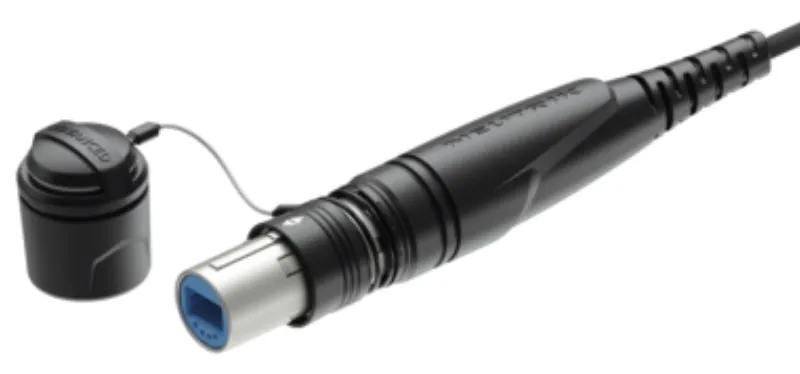
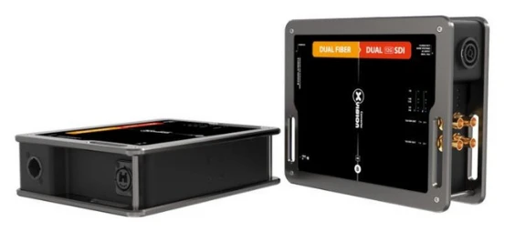

標準かX-TREMEか？
NKO2Sは標準系列、NKOX2Sは二重被覆で保護を強めた系列です。
映像をつなぐ・整える ↗EQUIPMENT / 78
光ケーブル
離れた機器を結ぶ光配線を、型式から選ぶ。
KEY SPECIFICATIONS

画像を大きく見る ＋01 / ROLE & FLOW
02 / BEFORE YOUR BRIEF
NKO2Sは標準系列、NKOX2Sは二重被覆で保護を強めた系列です。
接続機器の指定するSM/MM、PC/APC、光モジュールと配線を照合してつなぎます。
直線距離ではなく実際の配線経路と余長から50m/100mを選びます。ドラム・中継アダプターは別途手配範囲を整理します。
03 / CHOOSING THE RIGHT TOOL
対応する光伝送機器の間を結び、操作席と舞台などを離して構成するときの配線選定に。
2芯は光ファイバーの本数です。QUADやSMPTEハイブリッドとは別の製品です。接続先や光モジュールを確かめずに組み合わせません。
光伝送担当者が光出力の停止を確認してから接続し、端面を肉眼や拡大鏡でのぞきません。IP65は、対応するコネクターを正しく接続・ロックした状態での等級です。破損・水濡れや接続条件の不一致があれば使わず、担当者が点検します。
接続機器と光モジュール、型式、長さ、配線経路、使用期間、ドラム・中継部品・配送・敷設の範囲をお聞かせください。本体・周辺機材・搬入出・設営・本番操作・撤去を分けて、必要な範囲を整理します。
04 / RELATED EQUIPMENT
 見る ↗SDI光伝送
見る ↗SDI光伝送離れたカメラと映像卓を、1系統の光伝送でつなぎます。
図解。 見る ↗LEDデータの光変換器
見る ↗LEDデータの光変換器離れたLEDへ、光の経路からデータを分ける。
H10FN2の端子のない面。 見る ↗12G-SDI→光 送信機
見る ↗12G-SDI→光 送信機2系統の 4K 映像を、光で遠くへ送り出す。
Theatrixx XVV2SDI2FIBER-12G
見る ↗光→12G-SDI 受信機光で届いた2系統の映像を、SDIに戻す。
Theatrixx XVV2FIBER2SDI-12G